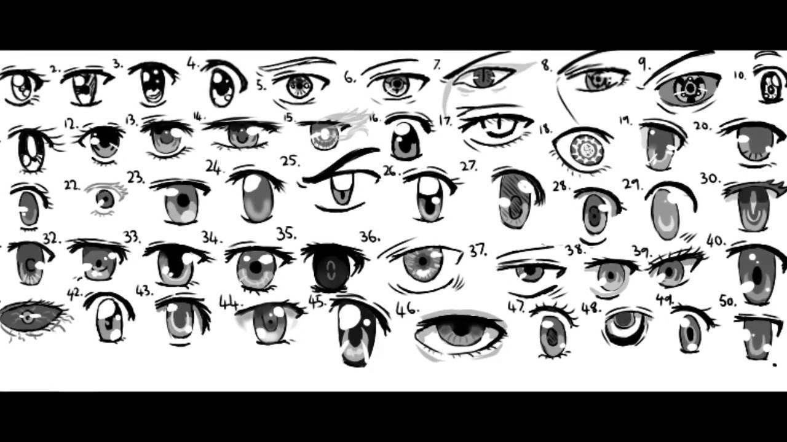
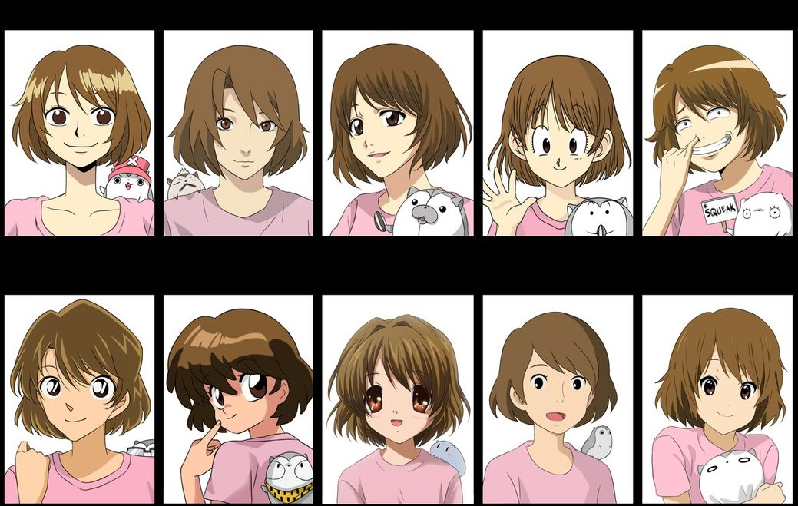
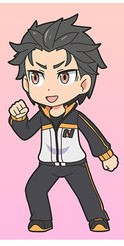

Examples |
||||
| 
|

|

|

|
|
In order to compete with ever growing animation industry like Disney or Nickelodean, anime needed something to make it appear unique and fresh.
Therefore,
a unique drawing style and caricature were born in this industry. With this, anime almost always unique with its drawing style.
A few of those characteristics are the way
the artist draw the character's face and their posture. The artist usually draws the character with
exxageration in some of the details, by making them appear larger or smaller or
etcetera in comparison to other animation drawing,
while trying to match the proportions of human body in reality, adding some realism and fantasy in their design.
The color in
the animation was lively or darker to empahsize the tone of the story itself, with more frame for in-between scenes to make
the movements of the character much more flexible and fluent.
For an example, there is a style called chibi (ちび),
literally means "small child"; deformed the character's height and posture (making them look short, chubby and cute) compared to its original form.
This form is considered cute by many fans and used to indicate cute or humorous scene.
One of the trademarks in anime's drawing style is the distinctive large eyes with numerous reflective highlights and detailed color,
along with small noses and mouths generally denoted by minimal lines.
(Even certain styles that favor unrealistically broad, generous mouths depict them using minimal lines.)
The style itself uses many angles and flowing, attenuated lines. Things such as eyelashes, hair, and clothing are depicted in more fine detail.
The color often uses more variants and shading, with greater attention paid to non-outlined highlights and shadows to add more depth.
In contrast, American animation either falls into attempts at comic-book style "realism" (as realistic as that can get, anyway) or grossly exaggerated,
comical cartoon characters with rounded,
highly exaggerated features. There's usually less detail, focused instead on using tricks of style to imply the detail in more subtle,
understated fashion, and less attention to shading instead of solid
block colors save for in dramatic scenes that require it.
Where American animation may seem to lack in that aspect, though, it makes up for it in the amount of animation done. American animation includes
a great deal of original animated motion - some of it used cyclically, but still animated painstakingly frame by frame.
In contrast, anime uses a lot of cheats: long scenes in which only the mouth of a character
(and maybe a few strands of hair) moves during delivery of key information,
or depicting rapid motion with a character frozen in an action pose against a swift-moving, stylized background that requires little
animation.
They often use dramatic still shots against patterned backgrounds with a few moving emotive symbols will accompany a monologue. Both styles reuse shots and sequences,
but Japanese animation tends to be
a little more obvious about it. This is why Japanese anime is sometimes labeled as "lazy"- metaphorically, of course - by American animators.
The style element goes a bit further than just drawing styles, though.
American animation tends to use straight-on camera shots, less concerned with cinematic angles and dramatics
than with clearly depicting the events, though there are exceptions to that rule.
Japanese animation will often make use of exaggerated angles, perspectives, and zooms
to intensify the mood of a scene and show actions to extreme effect.